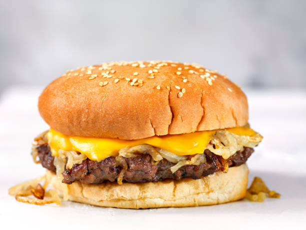

Smashburger Recipe

Description
A smash burger is a type of hamburger. According to the Food Network, "A smash burger is a thin beef patty cooked on a super-hot griddle. The burger is smashed down, usually with a spatula, to increase browning and craggy bits on the surface for extra flavor."
Ingredients
- Mayonnaise
- Dijon mustard
- Pickle juice
- Diced pickle
- Salt
- Black pepper
- Ground beef
- Hamburger buns
- Butter
- Lettuce
- Tomato
- Red onion
- American cheese
Steps
- Make the sauce
- Make the burger seasoning mix
- Prepare the burgers
- Cook the smashburgers
- Season the burgers with more mix and continue to cook
- Add cheese to the burgers
- Toast the burger buns
- Build and serve the smashburgers
Home